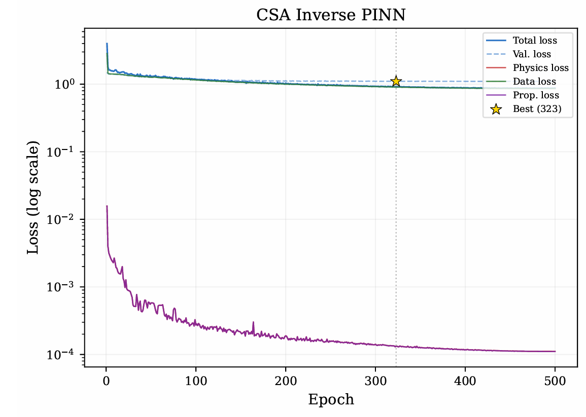
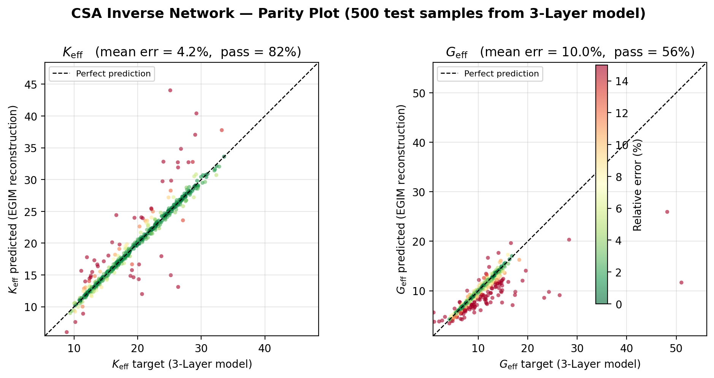

- Fallstudie
- Masterarbeit, FAU
- Zeitraum
- 10/2025 – 02/2026
Grenzflächenparameter in Verbundwerkstoffen per PINN bestimmen
In Verbundwerkstoffen entscheidet die dünne Übergangszone (Interphase) zwischen Einschluss und Matrix über die Lastübertragung und die effektive Bauteilsteifigkeit. In Finite-Elemente-Rechnungen ist diese Schicht teuer, weil extrem kleine Schichtdicken sehr feine Netze und schlecht konditionierte Steifigkeitsmatrizen erzwingen. Ein Null-Dicken-Grenzflächenmodell (Extended General Interface Model, EGIM) ersetzt die Schicht durch vier effektive Parameter, die sich jedoch weder direkt messen noch analytisch invertieren lassen.
Der Ansatz: Mikromechanik in der Verlustfunktion
Ich habe die analytischen Mori-Tanaka-Homogenisierungsgleichungen von MATLAB nach Python und PyTorch überführt (gegen die Referenzimplementierung bis auf Maschinengenauigkeit von 10⁻¹⁴ verifiziert) und direkt in die Verlustfunktion eines inversen PINN eingebettet. Eingang sind die effektiven Kompressions- und Schubmoduli eines dreischichtigen Interphasenmodells sowie die Phasenkennwerte; Ausgang sind die vier Grenzflächenparameter, die genau diese effektiven Moduli reproduzieren.
Physikalische Schranken sind direkt in der Ausgabeschicht verankert, damit das Netz ausschließlich zulässige Steifigkeiten und Grenzflächenpositionen vorhersagt. In jedem Trainingsschritt prüft das eingebettete Vorwärtsmodell, ob die vorhergesagten Parameter die Zielsteifigkeiten tatsächlich rekonstruieren.
Was über die Genauigkeit im Training entschieden hat
Drei Eingriffe haben die Rekonstruktionsgenauigkeit maßgeblich verbessert: die Korrektur fehlerhaft annotierter Randfälle im Trainingsdatensatz, eine adaptive Verlustgewichtung nach dem ReLoBRaLo-Prinzip zwischen Daten- und Physikverlust sowie Gradientenbegrenzung gegen instabile Updates. Der erste Punkt war der größte Hebel, weil synthetische Platzhalterwerte an den Rändern des Parameterraums das Netz zuvor systematisch verzerrt hatten.

Modellvergleich und Validierung im Parameterraum
Um die direkte Inversion sauber einzuordnen, habe ich zusätzlich ein Branch-Trunk-DeepONet als differenzierbares Vorwärts-Surrogat trainiert (0,21 % mittlerer Vorwärtsfehler für K_eff und 0,36 % für G_eff) und mit einem Multi-Start-L-BFGS-Inversionssolver sowie einer globalen Differential-Evolution-Optimierung verglichen. Während die iterative Inversion auf dem Surrogatmodell bei extremen Steifigkeitsverhältnissen in lokalen Minima hängenbleibt, liefert das direkte inverse PINN die Parameter in einem einzigen Vorwärtsschritt ohne Laufzeit-Optimierung.

Rekonstruktionsfehler unter 5 % in 33 von 36 Konfigurationen (Median 1,4 % für K_eff, 4,0 % für G_eff)
Im strukturierten Sweep über Steifigkeitsverhältnis und Volumenanteil liegen 33 von 36 Konfigurationen unter der 5-%-Schwelle, außerhalb extrem weicher Einschlüsse meist unter 2 %. Genau genug, um aufwendige FE-Detailmodelle der Interphase in Parameterstudien durch das schnelle Grenzflächenmodell zu ersetzen.